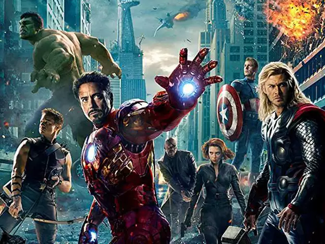

About Iron Man
Iron Man was one of the original recruits for The Avengers. Tony Stark uses his custom-made suit that is AI, to fight bad guys.
Iron Man and the Avengers
Iron Man's Characteristics
- Tony Stark is Iron Man.
- The suit is made of nitinol.
- An Arc Reactor is what charges Iron Man's armour.
Iron Man's Friends
Iron Man has many superhero friends. His best friend is War Machine while his frenemy is Captain America. He recruits Spiderman and treats him like his son. He works together with Bruce Banner (Hulk) as they are both smart dudes. Click the links below to learn more about them: